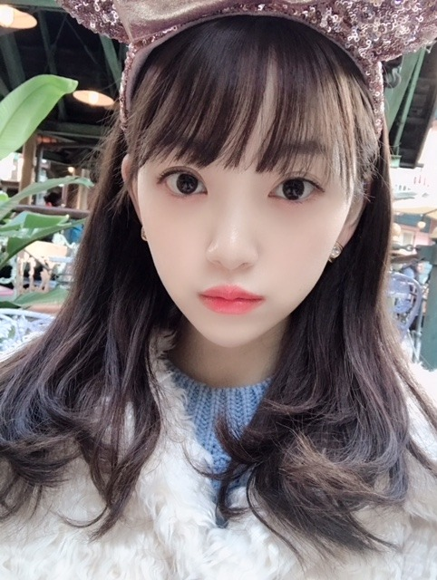
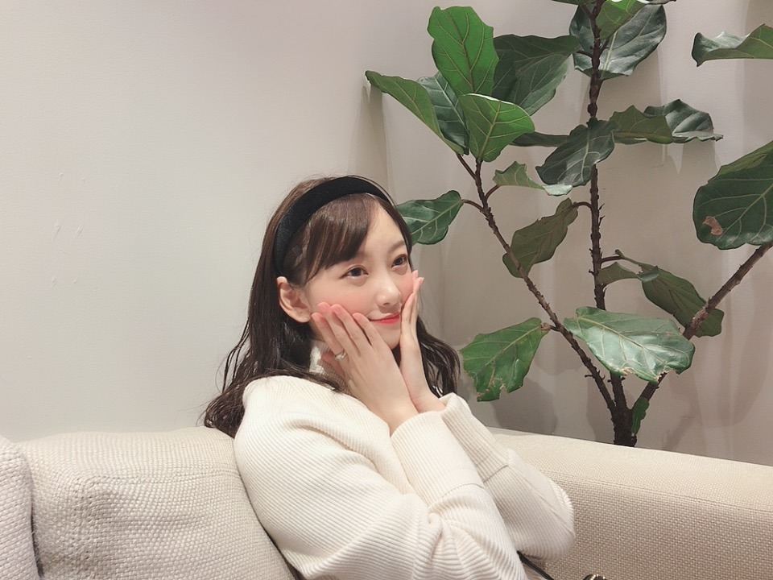

2019/0109Wedルージュと言うか紅と言うか
ちいさな目標
今年はコーヒーを飲めるようになりたいなぁ
コーヒー牛乳は好きだし
特に温泉上がりの！
コーヒーの香りも好きだから
あと一歩な感じがします...
朝に嗅ぐコーヒーの香りが大好きで
パンの香りもしたらもう最高☺︎
パン屋さんに行くと、ここで働いている人は毎日パンの香りに包まれて幸せな気持ちなのかなぁって考えます
その人がなぜその職についたのかっていう話を聞くのすごく好きなんですよね
だから会う人会う人に聞いちゃう
意外な理由もあればなるほど〜そんなきっかけ！と納得したり...
私がアイドルを目指すきっかけは何だったのか
実際乃木坂に入ってどう変わったか...
ちょうどですね、
1/11 金曜 18:30〜NHK岐阜にて
「まるっと！ぎふ」インタビューの様子が流れます☺︎！
そこで岐阜での話や映画の話、乃木坂の話などをさせていただきましたので興味のある方は是非、見てください！
お正月は、絢音と焼肉を食べてお買い物をしたり
蘭世と韓国料理を食べてお買い物してプリクラを撮ったり(若い)
友達と和食や火鍋を食べたりゆかとディズニー行って映画を観たり母とお買い物をしたり凄く充実していました

お仕事の合間やオフの日に
会いたいって言ってくれる
会いたいって思える素敵な友達に恵まれて幸せ者だなぁと新年早々感じました✨
大阪の握手会でも沢山の方が
寒い中会いに来てくださりました
ありがとうございます✨✨
関わる人、1人1人を大切にできる一年にしたいです！

カメラ向けると大抵真顔をするみり愛さん...
毎晩冷え込むので皆さん体調にはお気をつけて〜〜

今日23:45〜文化放送 レコメン！
今週の日曜は21時22時台に
らじらー！サンデーに出ます
聴いてくださいな、
寒い日はラジオに限る！
笑
あ！ちなみに今日の夜ご飯は、

お寿司なんだ〜〜♪♪
楽しみ！梅しそ巻きが好き！
わーい
では
2019/01/09 18:36
コメント(361)
堀ちゃん すごい美人になったね
コーヒーけっこう美味しいですよ〜！がんばー！
みおなかわいいー！
未央奈ちゃんコーヒー飲めるように頑張ってあと1年で入試なので勉強未央奈ちゃんがいるから頑張れます。未央奈ちゃん大好きです
これからも頑張って☺
これからも頑張って☺
今晩は❗️❕今夜のレコメンはLIVEで未央奈の美声とのりさんとの掛け合い聴けるんだぁ➰
待ってました‼️非常に楽しみ〰️❗️
さて未央奈はまだコーヒー飲めないんだね
でも湯上がりにコーヒー牛乳飲むんだったら、コーヒーフレッシュを使わずに多少多目の普通の牛乳と砂糖をい入れればきっと直ぐに飲めるようになるでしょう☕️➿これも慣れですよ……
それよりも、美味しいコーヒーを入れられるようにペーパードリップを何度も何度も自分で経験するとマスターする頃には、飲めるようになるばかりでなく味の違いもわかるようになるでしょう❗️
大人の嗜みとして苦味・酸味のバランスがわかって珈琲を上手に入れられる女性は人としてもポイント高いと感じます‼️
未央奈も新年の抱負として体験したいなら、HARIOのV60シリーズがオススメです❗️
世界中のバリスタに
その名が知られたMade in Japan の逸品。
これは理想的なネル（布）ドリップ方式に近い感じでコーヒーを抽出できるから本格的な珈琲の味を楽しめますよ。円錐形のドリッパー＆専用フィルターで、リーズナブルなモノでは400円（D）＋200-300円（F）位で始められるので、気になる品種の豆から試してみて自分の好きな豆やブレンドを発見する楽しみがありますヨ ️
未央奈の生誕グッズのマグカップで毎日のようにペーパードリップして好みの珈琲☕️を飲むのは至福のひととき…… 未央奈！ コーヒーに合うクールなデザインにしてくれて有難う❗️あまりにおしゃれで違和感ないので誰もアイドルがデザインした代物とは気付いていないから君と対話しながら飲んでいるような優越感に浸れるのが嬉しい！
美味しく入れるポイントとしては、
温度は80ｰ85度で、放物線を描かないよう真っ直ぐドリップさせて、えぐ味が出る残り10滴位になったらカップから外すと美味しいコーヒーができるはず〰️☺️
飲込みが早い人だったら20ｰ30杯で安定した味を出すことができるだろうから、未央奈にも挑戦して欲しいなあ～～✨
今宵のラジオ放送 ️ 入れたての珈琲が入ったマグで両手をぬくとめ（岐阜弁：暖めるの意）ながら…スタンバイしていますネ
ほんじゃ、また。お元気で‼️
待ってました‼️非常に楽しみ〰️❗️
さて未央奈はまだコーヒー飲めないんだね
でも湯上がりにコーヒー牛乳飲むんだったら、コーヒーフレッシュを使わずに多少多目の普通の牛乳と砂糖をい入れればきっと直ぐに飲めるようになるでしょう☕️➿これも慣れですよ……
それよりも、美味しいコーヒーを入れられるようにペーパードリップを何度も何度も自分で経験するとマスターする頃には、飲めるようになるばかりでなく味の違いもわかるようになるでしょう❗️
大人の嗜みとして苦味・酸味のバランスがわかって珈琲を上手に入れられる女性は人としてもポイント高いと感じます‼️
未央奈も新年の抱負として体験したいなら、HARIOのV60シリーズがオススメです❗️
世界中のバリスタに
その名が知られたMade in Japan の逸品。
これは理想的なネル（布）ドリップ方式に近い感じでコーヒーを抽出できるから本格的な珈琲の味を楽しめますよ。円錐形のドリッパー＆専用フィルターで、リーズナブルなモノでは400円（D）＋200-300円（F）位で始められるので、気になる品種の豆から試してみて自分の好きな豆やブレンドを発見する楽しみがありますヨ ️
未央奈の生誕グッズのマグカップで毎日のようにペーパードリップして好みの珈琲☕️を飲むのは至福のひととき…… 未央奈！ コーヒーに合うクールなデザインにしてくれて有難う❗️あまりにおしゃれで違和感ないので誰もアイドルがデザインした代物とは気付いていないから君と対話しながら飲んでいるような優越感に浸れるのが嬉しい！
美味しく入れるポイントとしては、
温度は80ｰ85度で、放物線を描かないよう真っ直ぐドリップさせて、えぐ味が出る残り10滴位になったらカップから外すと美味しいコーヒーができるはず〰️☺️
飲込みが早い人だったら20ｰ30杯で安定した味を出すことができるだろうから、未央奈にも挑戦して欲しいなあ～～✨
今宵のラジオ放送 ️ 入れたての珈琲が入ったマグで両手をぬくとめ（岐阜弁：暖めるの意）ながら…スタンバイしていますネ
ほんじゃ、また。お元気で‼️
堀ちゃん、ブログ更新ありがとう。
正月休みは充実したみたいだね。
新年明けてのはじめての生放送のレコメン楽しみにしてるね。
正月休みは充実したみたいだね。
新年明けてのはじめての生放送のレコメン楽しみにしてるね。
梅しそ巻き、美味しいですよね。自分はイカかな。今日もラジオ楽しみにしてます。
お疲れ様
応援してます❗
応援してます❗
未央奈のblog読んでると自然に顔がほころぶよ
台北公演が近づいてきたから楽しみ＼(^o^)／
台北公演が近づいてきたから楽しみ＼(^o^)／
コーヒーはもっぱらブラックです。
コンビニコーヒー美味しいですよ。
らじらーたのしみで～す。
コンビニコーヒー美味しいですよ。
らじらーたのしみで～す。
こんばんは～
まるっと！ぎふ絶対観る
正月充実してたみたいで良かったー
いつも忙しいと思うからリフレッシュ
できる時はリフレッシュして、体調には
気を付けてね！
実は、風邪引いちゃって…友達のやつが
移っちゃったのかな
では！
まるっと！ぎふ絶対観る
正月充実してたみたいで良かったー
いつも忙しいと思うからリフレッシュ
できる時はリフレッシュして、体調には
気を付けてね！
実は、風邪引いちゃって…友達のやつが
移っちゃったのかな
では！
お疲れ様！
大阪個握楽しかったよ
次名古屋で会えるのが待ち遠しい
いつもモバメとブログでかわいい写真ありがとうございます
大阪個握楽しかったよ
次名古屋で会えるのが待ち遠しい
いつもモバメとブログでかわいい写真ありがとうございます
ディズニーのツーショットサイコーだったよ！可愛すぎ。これからも仲良くねー
ブログ更新ありがとうございます。！
自分はコーヒー牛乳も無理です…笑
どうすれば飲めるようになりますかね？笑
これからもお仕事頑張って下さい
応援してます
体調崩さないようにして下さいね
自分はコーヒー牛乳も無理です…笑
どうすれば飲めるようになりますかね？笑
これからもお仕事頑張って下さい
応援してます
体調崩さないようにして下さいね
充実したお正月休みで良かったね～
読んでるファンもホッとします
写真見る度にお顔がどんどん可愛くなって、未央奈さんには限界がない？！と感じてま～す
読んでるファンもホッとします
写真見る度にお顔がどんどん可愛くなって、未央奈さんには限界がない？！と感じてま～す
未央奈〜
ブログ更新ありがとう！
コーヒー、僕は大好きです！
あの香りがやっぱりたまらないんです〜
嗅ぐだけで気持ちが落ち着きますよ！！
コーヒー牛乳も美味しいですよね！
充実したお正月を過ごせたみたいで良かったです〜
レコメン！もらじらー！も楽しみにしてますね。
寒い日が続いてますので、体調に気をつけてくださいね。
またの更新、待ってます！
ブログ更新ありがとう！
コーヒー、僕は大好きです！
あの香りがやっぱりたまらないんです〜
嗅ぐだけで気持ちが落ち着きますよ！！
コーヒー牛乳も美味しいですよね！
充実したお正月を過ごせたみたいで良かったです〜
レコメン！もらじらー！も楽しみにしてますね。
寒い日が続いてますので、体調に気をつけてくださいね。
またの更新、待ってます！
ブログありがとう！
めっちゃ充実してて羨ましすぎる……
自分も頑張らないと！
めっちゃ充実してて羨ましすぎる……
自分も頑張らないと！
更新ありがとう！
未央奈のブログはいつも写真が多いから嬉しい！
今日修学旅行でUSJ初めていったけど楽しかった！
未央奈も新年スタートダッシュ楽しんでね！
未央奈のブログはいつも写真が多いから嬉しい！
今日修学旅行でUSJ初めていったけど楽しかった！
未央奈も新年スタートダッシュ楽しんでね！
今日の晩御飯はお寿司で梅しそ巻きが
好きな堀未央奈ちゃん
ブログ更新ありがとう
今年の目標可愛らしいね⁉︎
早くコーヒー飲めるようになって
大人の仲間入りした下さい⁉︎(^^)
ちなみにブラック派です⁉︎
正月休みなどはメンバーや
おぎゆかちゃんとのデート良かったね⁉︎
また写真楽しみにしとくね⁉︎
さてともうすぐレコメン今日も楽しむぞ〜
好きな堀未央奈ちゃん
ブログ更新ありがとう
今年の目標可愛らしいね⁉︎
早くコーヒー飲めるようになって
大人の仲間入りした下さい⁉︎(^^)
ちなみにブラック派です⁉︎
正月休みなどはメンバーや
おぎゆかちゃんとのデート良かったね⁉︎
また写真楽しみにしとくね⁉︎
さてともうすぐレコメン今日も楽しむぞ〜
未央奈ーー
温泉の後のコーヒー牛乳は格別だよね！！
温泉の後のコーヒー牛乳は格別だよね！！
みおな、こんばんは。更新ありがとう！ 充実した、お正月だったみたいですね！良かったです！ ラジオ楽しみにしてます。 コーヒー飲めると良いですね頑張って下さい。 みおなも体調崩さないように。 では、毎日みおなに良いこと沢山ありますように！ おやすみおな！！
未央奈さんはスーパー美少女だと思う！！
未央奈ちゃんブログ更新ありがとう！
自分も最近飲めるようになったんですが、
美味しいですよ！！
今日は勉強しながらレコメン聞きますね！！
お仕事大変だと思いますが頑張ってください！
大好きです！！
応援しています！！！
自分も最近飲めるようになったんですが、
美味しいですよ！！
今日は勉強しながらレコメン聞きますね！！
お仕事大変だと思いますが頑張ってください！
大好きです！！
応援しています！！！
コーヒー&パンの香り←確実にリラックス効果もありそうだよねぇ♪♪ いろんな職業があるように、いろんな種類のきっかけが。堀ちゃんに、どうしてその職業に就いたの？って聞かれてみたい(*´-`)ﾉ笑 新年も寒い日が続いてるけど、風邪とかひかないようにお仕事適度に頑張ってねぇ☆
可愛すぎる！
コーヒー牛乳美味しいよね！
あれはあれでいいものです！
最近はコンビニで販売しているから
夜でもやたらと攻撃されるけど(笑)
朝のパン屋さんの攻撃も手強い(笑)
お～～遊びましたね！
いいこと。リフレッシュ大事！
･･･岐阜か～～
･･･ラジオか～～
あっ！これは聴けるわ(笑)
寒い日かはわかりませんが～
寿司ですかね～(笑)
って今日かい！(笑)
なんかね。
晩御飯のあとにアイスを食べたくなって･･･
食べてしまった･･･
チョコミント･･･
#部屋は暖めていない。(笑)
#なんか大丈夫だった。(笑)
じゃ、体調にお気を付けて♪
あれはあれでいいものです！
最近はコンビニで販売しているから
夜でもやたらと攻撃されるけど(笑)
朝のパン屋さんの攻撃も手強い(笑)
お～～遊びましたね！
いいこと。リフレッシュ大事！
･･･岐阜か～～
･･･ラジオか～～
あっ！これは聴けるわ(笑)
寒い日かはわかりませんが～
寿司ですかね～(笑)
って今日かい！(笑)
なんかね。
晩御飯のあとにアイスを食べたくなって･･･
食べてしまった･･･
チョコミント･･･
#部屋は暖めていない。(笑)
#なんか大丈夫だった。(笑)
じゃ、体調にお気を付けて♪
ブログ更新ありがとう
レコメンでコメント読んでほしいなー
未央奈ちゃんも体に気をつけて
お寿司いいな！
レコメンでコメント読んでほしいなー
未央奈ちゃんも体に気をつけて
お寿司いいな！
みおなさんらぶ
堀さんが岐阜県出身と知ってから、岐阜県が、とても素晴らしい土地に思えてきました。堀さんを初めて知ったのは、ミュージックフェアーでドームをドリームと間違えてたみたいな話をされてて、可愛いのに、おもしろい。この娘は、他のアイドルとは、ちょっと違う才能あるなと思いました。本当に、そのとおりでした。堀さんが一番才能あると思いますし、自分の幸せに気がつける堀さんは凄いです。堀さんは自分の心に灯りを、ともせるから、人の心にも灯りを、ともせるんですね、堀さんは、みんなの暗がりを晴らしてくれる観光のような、また会いたいと思われる存在、やっぱり堀さんは明るくて温かい太陽の女神様です。
俺も出来るだけ腹筋50回するように心掛けているんだ。仕事が忙しくて出来ない時もあるけど、なるべく腹筋50回やるようにするよ。
朝晩が冷えるからお互いに体調崩さない様に気をつけてネッ。
朝晩が冷えるからお互いに体調崩さない様に気をつけてネッ。
みおなー
乃木坂1かわいい！
乃木坂1かわいい！
みお会いたい
みおなちゃんブログ更新ありがとう！
ロング派にはたまらん
ディズニーの写真すごい好き！
お寿司楽しんでね〜
ロング派にはたまらん
ディズニーの写真すごい好き！
お寿司楽しんでね〜
起抜けのブラックコーヒーが
脳全体に染み渡り細胞が活性化する
一欠片のパンをほおばり タバコの
煙りをくぐらせる頃にはすっかり
昨日の自分に戻るのがルーティンです
美味しいですよコーヒーは
是非違いの分かる大人になって下さいね 笑
脳全体に染み渡り細胞が活性化する
一欠片のパンをほおばり タバコの
煙りをくぐらせる頃にはすっかり
昨日の自分に戻るのがルーティンです
美味しいですよコーヒーは
是非違いの分かる大人になって下さいね 笑
未央奈ちゃんブログ更新ありがとう！
そしてみり愛ちゃんとのツーショットもありがとう 6日の個握の時未央奈ちゃんがみり愛ちゃんのレーンに遊びにきてめちゃめちゃ顔ちっさくて可愛くて緊張しちゃった
6日の個握の時未央奈ちゃんがみり愛ちゃんのレーンに遊びにきてめちゃめちゃ顔ちっさくて可愛くて緊張しちゃった
今度未央奈ちゃんの握手も行ってみたいなって思ってるからその時はよろしくね！
そしてみり愛ちゃんとのツーショットもありがとう
今度未央奈ちゃんの握手も行ってみたいなって思ってるからその時はよろしくね！
みおちゃんブログありがとう！コーヒーを飲めるようになることが目標なのか！レコメンで大人な男性は？っていうテーマに出てきそうだね！朝コーヒーとパンってなんだかジブリみたい！私もそういうなぜそこの職業についたかとか生活を想像するの好き！その人の人生みたいなものを妄想するのも好きだなぁ！まるっと岐阜絶対見なきゃじゃん！！ドキュメンタリー的な感じかな？単独でなんてすごいよ！いいなぁ私もみおちゃんと焼肉行きたい！私も会いたいとか遊びたいって言ってくれる人がいて感謝してる！プリン会メンバーとめっちゃ仲良いな笑笑 らじらー聞くよ！お寿司か！私サーモンといくらがすき！レコメン楽しみ！！
ももんが
ももんが
ブログ更新ありがとうございます！！
おぎゆかちゃんとの夢の国楽しかったですか？？
14日の3部の握手会行きます！！
おぎゆかちゃんとの夢の国楽しかったですか？？
14日の3部の握手会行きます！！
未央奈！
コーヒー、美味しいよ～。
俺は去年飲めるようになったけどね。
飲めるようになってからは、何だかんだでブラックが1番好きです！
飲んでる時は、コーヒーそのものの奥深い味を楽しんでます！
ちいさい目標、是非達成してください！
もちろん大きい目標もあると思うので、それもね！
正月はバイトしぱなっしだった...
束の間の休息かもしれなかったかもしれないけど、楽しめて良かったね！
俺ももうちょっと遊びたかった...
レコメン、聴くね！
コーヒー、美味しいよ～。
俺は去年飲めるようになったけどね。
飲めるようになってからは、何だかんだでブラックが1番好きです！
飲んでる時は、コーヒーそのものの奥深い味を楽しんでます！
ちいさい目標、是非達成してください！
もちろん大きい目標もあると思うので、それもね！
正月はバイトしぱなっしだった...
束の間の休息かもしれなかったかもしれないけど、楽しめて良かったね！
俺ももうちょっと遊びたかった...
レコメン、聴くね！
コーヒー香りはいいけど俺も苦手よ(^^;
お寿司は美味しいよね( ＾∀＾)
お寿司は美味しいよね( ＾∀＾)
ブログ更新ありがとうございます。個握行かせていただきました。ありがとうございました。堀さんも体調お気を付けてください。
仲のいい友達と過ごすのは、本当に安らぐよね！
今年も乃木坂がレコ大獲れるように頑張って欲しいです！
期待してます！
今年も乃木坂がレコ大獲れるように頑張って欲しいです！
期待してます！
ブログ更新ありがと！！
レコメンいつも楽しく聴かせてもらってます
今週は未央奈の声たくさん聴けて嬉しいな✨
ではでは､未央奈も体調気をつけて､無理しないようにね!!
レコメンいつも楽しく聴かせてもらってます
今週は未央奈の声たくさん聴けて嬉しいな✨
ではでは､未央奈も体調気をつけて､無理しないようにね!!
チャァオ～～!☆彡
ぎぃ❕・・・
岐阜、旅行したぁあああぁ～～～⤴️⤴️⤴️いぃ❕❤️❤️❤️❤️❤️笑顔
綺麗な山、綺麗な川でぇ～～⤴️⤴️めっちゃ遊んでぇ
川魚の塩焼き食べたぁあああぁ～～～⤴️⤴️⤴️い❕❤️❤️❤️❤️❤️笑顔
みおちゃん、岐阜写メお待ちしております❕❤️❤️❤️❤️❤️笑顔
(*^▽^)/★*☆♪
☆大人しい、おすまし！より☆彡
未央奈ちゃんかわいい…
癒されます❤︎
癒されます❤︎
未央奈ブログ更新ありがとう(^ ^)
コーヒーは香り良いけど味に慣れるまで大変だよね
飲めるように頑張って
NHK見たいけど地域が違うから見れない
月曜日、3〜5部に握手行くよー
楽しみにしてるね
コーヒーは香り良いけど味に慣れるまで大変だよね
飲めるように頑張って
NHK見たいけど地域が違うから見れない
月曜日、3〜5部に握手行くよー
楽しみにしてるね
最近、一段と大人っぽく綺麗になったね！
風邪引かないように気をつけてね～^^
風邪引かないように気をつけてね～^^
ブログ更新ありがとう
今年も活躍するのを楽しみにしてます。
ラジオ楽しみにしてます。
今年も活躍するのを楽しみにしてます。
ラジオ楽しみにしてます。
みおな更新ありがと！
毎日が充実しているようであんしん。あんしん。
ゆかみおももちろんだけど、
らんみおの写真もまたいっぱいみたいなぁ。
楽しみにしてるね！
毎日が充実しているようであんしん。あんしん。
ゆかみおももちろんだけど、
らんみおの写真もまたいっぱいみたいなぁ。
楽しみにしてるね！
未央奈さん。可愛い写真をたくさん載せてくれてありがとう☆友達に恵まれているのは、そんなお友達を引き寄せる未央奈の素敵な人柄のおかげかな
この前の大阪の握手会、５部に未央奈に会いに行ったよぉ～ありがとうね
今年も未央奈単推しで応援していきます
この前の大阪の握手会、５部に未央奈に会いに行ったよぉ～
今年も未央奈単推しで応援していきます


らじらー！聴くねー
サッカー日本負けそう！やばいよやばいよ
...と思ったら同点に追いついたーーー！！！
アーーー！！！逆転したーーー！！！